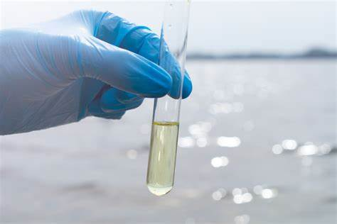
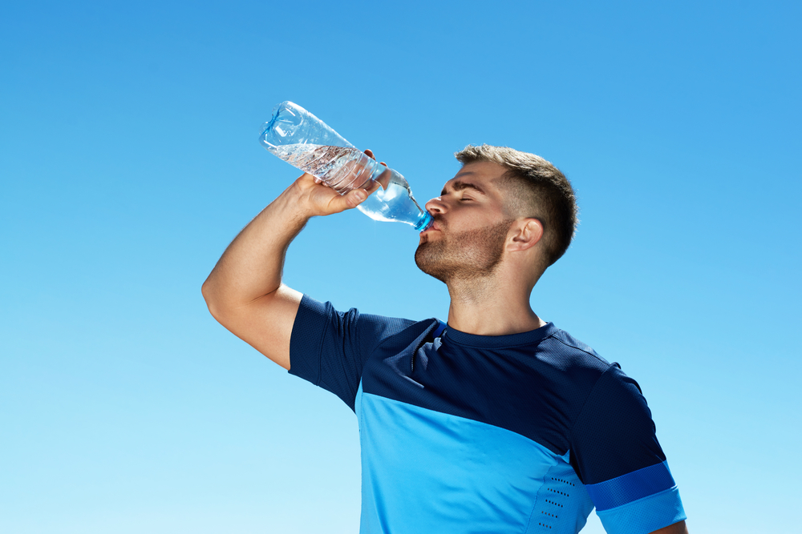

Welcome to AQUACHECK
Welcome to our Sensor Technology, your trusted partner in ensuring safe drinking water. Our mission is to safeguard public health by utilizing cutting-edge sensor technology to purify water.
At AQUACHECK, we are dedicated to taking proactive measures and implementing advanced steps to monitor and enhance water quality.
Our innovative solutions continuously assess water conditions, detect contaminants, and initiate purification processes to deliver clean and safe drinking water for all. Join us in our commitment to a healthier future through smart water management and technology.
Our state-of-the-art sensors continuously assess water conditions, detect contaminants, and initiate purification processes, ensuring that every drop of water meets the highest safety standards. By integrating real-time monitoring and smart purification methods, we provide a reliable solution to combat water pollution and promote public health.
Join us in our commitment to a healthier future through smart water management and technology. Together, we can make clean and safe drinking water accessible to all, creating a sustainable and healthy environment for generations to come.


Our Mission:
- At AQUACHECK, our mission is to revolutionize the way we approach water purity and environmental sustainability. We are dedicated to providing innovative and reliable solutions that ensure safe drinking water for all. Through the integration of advanced sensor technology and real-time monitoring systems, we strive to detect and eliminate contaminants from water sources efficiently and effectively.
- Our commitment extends beyond just technology; we are devoted to fostering a culture of awareness and education about water safety. By collaborating with communities, industries, and governments, we aim to implement best practices in water management and promote responsible usage of water resources.
Sustainability is at the core of our mission. We endeavor to reduce water waste, improve water treatment processes, and protect our natural water bodies from pollution. Our goal is to create a lasting impact that benefits not only the current generation but also preserves the environment for future generations.
- We believe in continuous improvement and innovation. Our team is constantly researching and developing new methods and technologies to enhance water purification and monitoring. By staying at the forefront of scientific and technological advancements, we ensure that our solutions are always cutting-edge and highly effective.
- At AQUACHECK, we are more than just a company; we are a movement towards a healthier, safer, and more sustainable world. Join us in our mission to make clean and safe drinking water a reality for everyone.
Our technology:
- Our expertise in water testing is grounded in cutting-edge technology and extensive experience in environmental monitoring.
We utilize advanced sensor systems and analytical software to provide precise and real-time data on water quality.
- Our comprehensive approach includes the use of high-accuracy pH meters, turbidity sensors, dissolved oxygen probes, and conductivity meters. For prominent water testing, we recommend leveraging these state-of-the-art tools alongside our robust data visualization and alert systems.
- Additionally, the integration of advanced data visualization tools allows for the clear and intuitive interpretation of complex data sets, enabling prompt and informed decision-making. This proactive approach facilitates the efficient management of wastewater treatment facilities, ensuring any potential issues are quickly addressed before they become significant problems. The use of these technologies not only enhances the effectiveness and reliability of wastewater treatment processes but also supports the sustainability and conservation of our precious water resources.
- This ensures timely detection of contaminants, effective management of water resources, and adherence to stringent environmental standards. Our dedication to innovation and excellence makes us a trusted leader in the field of water quality testing.By integrating our systems with modern infrastructure, we empower local authorities and organizations to make informed decisions and take swift action in response to water quality issues.
- Furthermore, our ongoing research and development efforts focus on enhancing sensor accuracy, expanding detection capabilities, and improving overall system efficiency. This relentless pursuit of excellence positions Waste Wizards at the forefront of the water testing industry, driving progress and fostering a sustainable future for all.